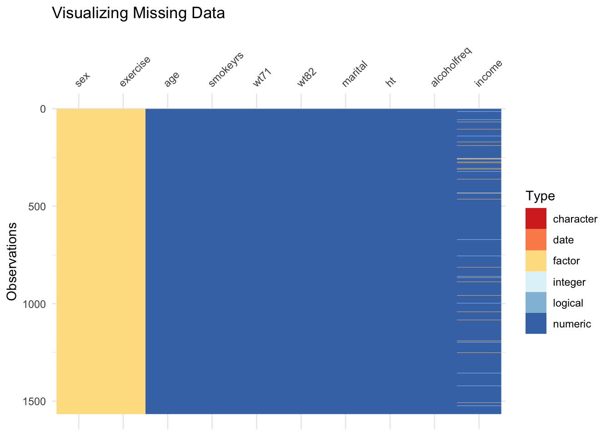
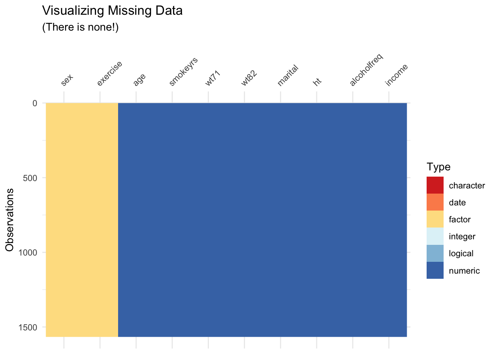
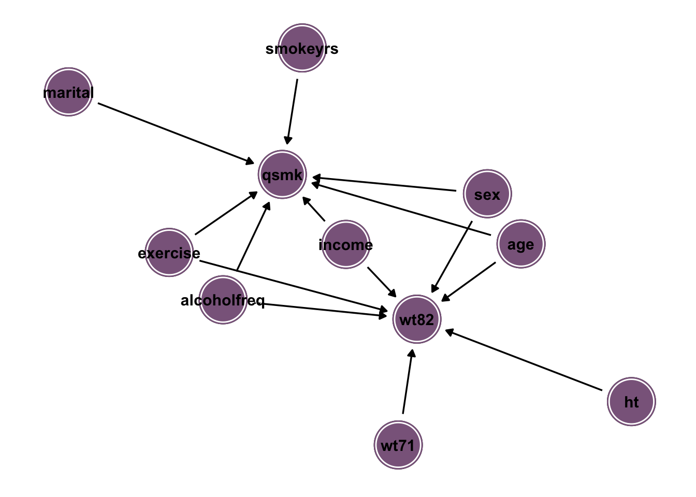
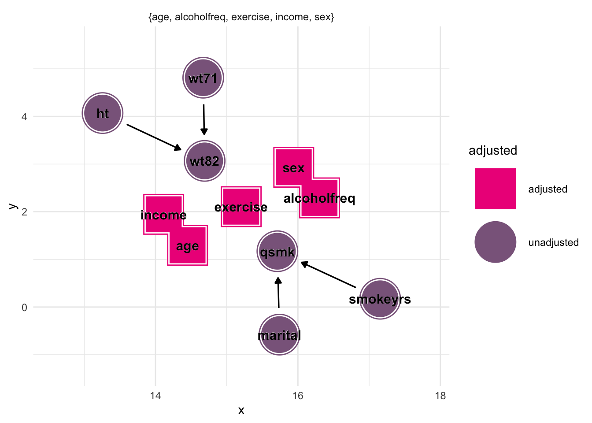
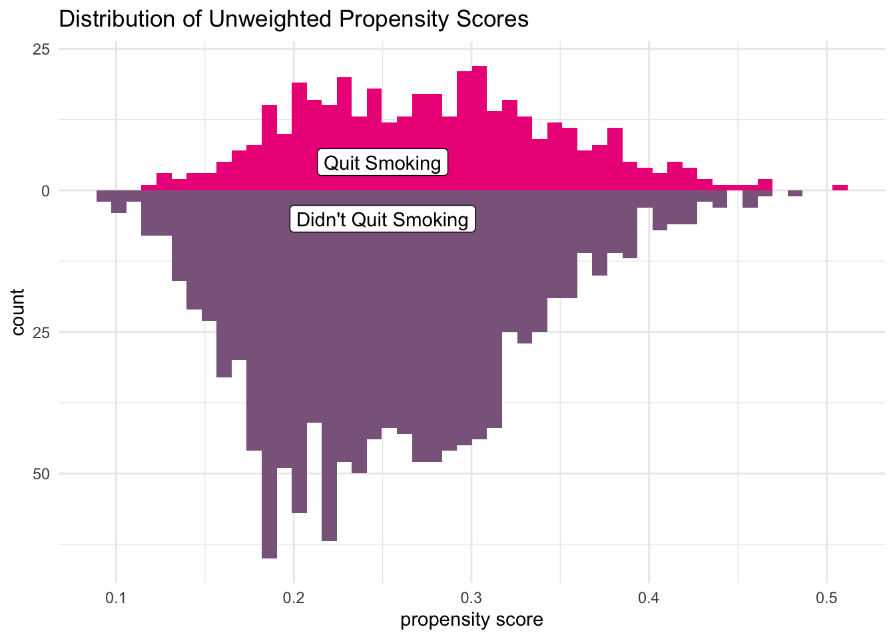
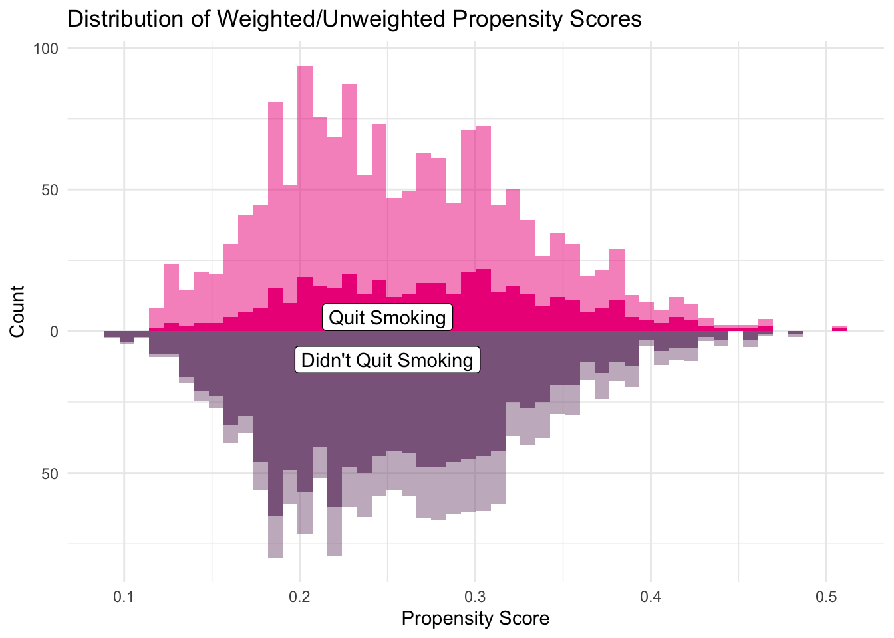
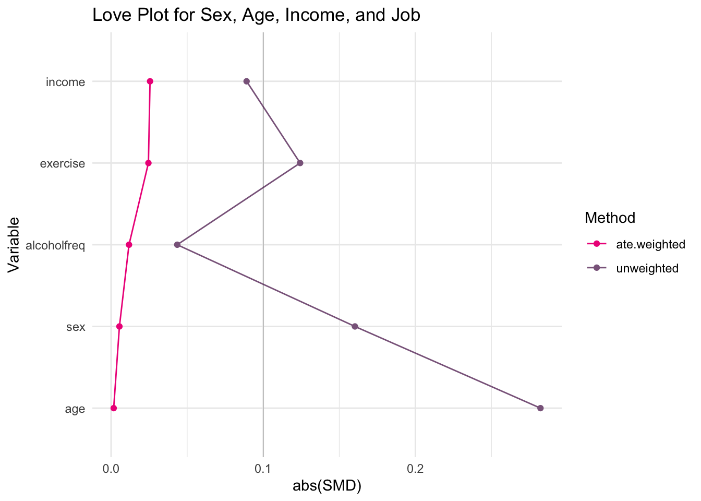
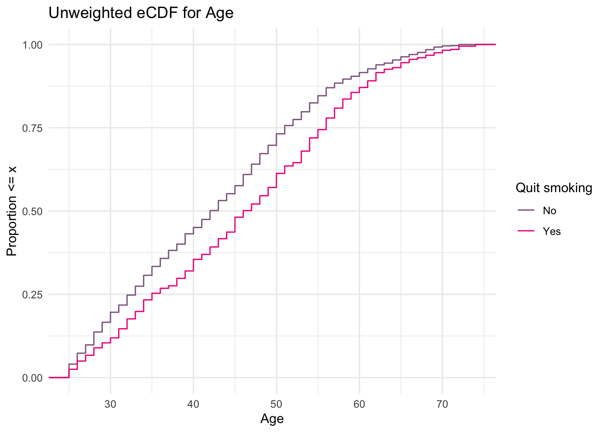
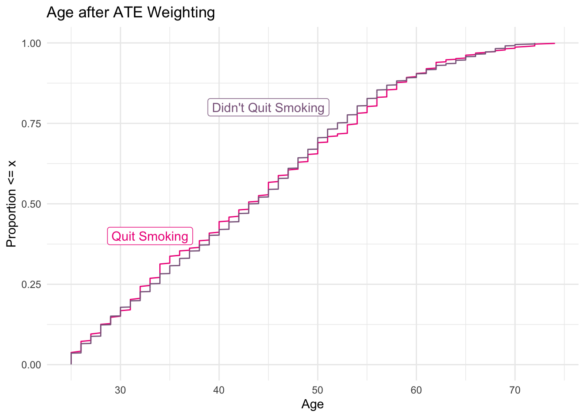
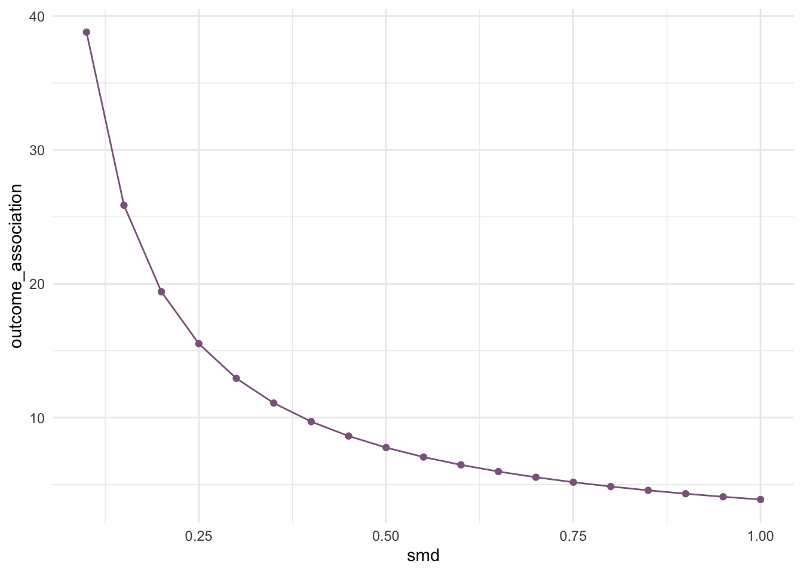

We are working with the nhefs (National Health and Nutrition Examination Survey) data set which contains 1629 observations of 67 variables. The variables in this dataset mostly relate to an individual’s health with a few involving tobacco prices and tax. We are interested in the effect of quitting smoking on ones weight. More specifically: with ones weight in 1971 as the starting point, does quitting smoking between the years 1971-1982 influence ones weight in 1982? For this question, we are interested in estimating the average treatment effect for the overall population. The variables we are particularly interested in are:
We start by making a table that shows more about how each of our variables are distributed.
nhefs %>%
tbl_summary(
by = qsmk,
include = c(
"wt71",
"age",
"sex",
"smokeyrs",
"exercise",
"alcoholfreq",
"ht",
"income",
"marital",
"qsmk",
"wt82")) %>%
add_overall()| Characteristic | Overall, N = 1,5661 | 0, N = 1,1631 | 1, N = 4031 |
|---|---|---|---|
| WEIGHT IN KILOGRAMS IN 1971 | 69 (60, 80) | 68 (59, 79) | 71 (61, 81) |
| AGE IN 1971 | 43 (33, 53) | 42 (33, 51) | 46 (35, 56) |
| 0: MALE 1: FEMALE | |||
| 0 | 762 (49%) | 542 (47%) | 220 (55%) |
| 1 | 804 (51%) | 621 (53%) | 183 (45%) |
| YEARS OF SMOKING | 24 (15, 33) | 23 (15, 32) | 26 (15, 35) |
| IN RECREATION, HOW MUCH EXERCISE? IN 1971, 0:much exercise,1:moderate exercise,2:little or no exercise | |||
| 0 | 300 (19%) | 237 (20%) | 63 (16%) |
| 1 | 661 (42%) | 485 (42%) | 176 (44%) |
| 2 | 605 (39%) | 441 (38%) | 164 (41%) |
| HOW OFTEN DO YOU DRINK? IN 1971 0: Almost every day, 1: 2-3 times/week, 2: 1-4 times/month, 3: < 12 times/year, 4: No alcohol last year, 5: Unknown | |||
| 0 | 325 (21%) | 242 (21%) | 83 (21%) |
| 1 | 219 (14%) | 171 (15%) | 48 (12%) |
| 2 | 494 (32%) | 359 (31%) | 135 (33%) |
| 3 | 328 (21%) | 249 (21%) | 79 (20%) |
| 4 | 195 (12%) | 138 (12%) | 57 (14%) |
| 5 | 5 (0.3%) | 4 (0.3%) | 1 (0.2%) |
| HEIGHT IN CENTIMETERS IN 1971 | 168 (162, 175) | 168 (162, 175) | 169 (162, 176) |
| TOTAL FAMILY INCOME IN 1971 11:<$1000, 12: 1000-1999, 13: 2000-2999, 14: 3000-3999, 15: 4000-4999, 16: 5000-5999, 17: 6000-6999, 18: 7000-9999, 19: 10000-14999, 20: 15000-19999, 21: 20000-24999, 22: 25000+ | 19.0 (17.0, 20.0) | 19.0 (16.8, 20.0) | 19.0 (18.0, 20.0) |
| Unknown | 59 | 35 | 24 |
| MARITAL STATUS IN 1971 1: Under 17, 2: Married, 3: Widowed, 4: Never married, 5: Divorced, 6: Separated, 8: Unknown | |||
| 2 | 1,237 (79%) | 906 (78%) | 331 (82%) |
| 3 | 88 (5.6%) | 64 (5.5%) | 24 (6.0%) |
| 4 | 93 (5.9%) | 74 (6.4%) | 19 (4.7%) |
| 5 | 92 (5.9%) | 74 (6.4%) | 18 (4.5%) |
| 6 | 55 (3.5%) | 45 (3.9%) | 10 (2.5%) |
| 8 | 1 (<0.1%) | 0 (0%) | 1 (0.2%) |
| WEIGHT IN KILOGRAMS IN 1982 | 72 (62, 83) | 70 (61, 82) | 75 (64, 86) |
| 1 Median (IQR); n (%) | |||
Before we can begin our causal assessment, we must investigate any missing data. To do this, we create a plot that helps us visualize any missing data:
nhefs %>%
select(sex, age, smokeyrs, wt71, wt82, marital, ht, alcoholfreq, exercise, income) %>% vis_dat(palette = "cb_safe") +
ggtitle("Visualizing Missing Data")
It appears that the only variables that has missing values is income. With this being said, we will conduct a predictive mean matching imputation method in order to impute these missing values. We also recreate the above plot to ensure that there are no longer missing data.
nhefs_imp <- mice(nhefs, m = 1, method = "pmm", printFlag = FALSE) #single imputation
complete_data <- complete(nhefs_imp)
complete_data %>%
select(sex, age, smokeyrs, wt71, wt82, marital, ht, alcoholfreq, exercise, income) %>% vis_dat(palette = "cb_safe") +
ggtitle("Visualizing Missing Data", subtitle = "(There is none!)")
We now have a complete dataset. To begin, we specify relationships for our exposure and outcome along with the other variables. Our proposed DAG is below.
dag <- dagify(
wt82 ~ wt71 + sex + age + exercise + ht + alcoholfreq + income,
qsmk ~ age + sex + smokeyrs + alcoholfreq + exercise + marital + income,
exposure = "qsmk",
outcome = "wt82"
)
dag %>%
ggdag() +
geom_dag_node(color = "plum4") +
geom_dag_text(color = "black") +
theme_dag() 
To prevent confounders, we need to close the backdoor paths on our DAG. To do this, we establish the adjustment set and adjust for those specified variables.
dag %>%
ggdag_adjustment_set(stylized = TRUE) +
geom_dag_text(color = "black") +
scale_color_manual(values = c("deeppink2", "plum4")) +
theme_minimal()
From the figure above, we can see that we need to adjust for age, alcoholfreq, exercise, income, and sex. These will therefore be the variables we include in our propensity score model.
We adjust for the above-listed variables by using a binomial model for our propensity scores. After specifying our model, we create a mirrored histogram of the calculatede propensity scores for both quitting and not quitting smoking.
complete_data <-
glm(qsmk ~ age + sex + income + exercise + alcoholfreq,
data = complete_data,
family = binomial()) %>%
augment(type.predict = "response", data = complete_data)
df_plot_ps <- complete_data %>%
tidyr::pivot_wider(names_from = qsmk,
values_from = .fitted,
names_prefix = "qsmk_p")
ggplot(df_plot_ps) +
geom_histogram(bins = 50,
aes(x = qsmk_p1),
fill = "deeppink2") +
geom_histogram(bins = 50,
aes(x = qsmk_p0,
y = - stat(count)),
fill = "plum4") +
scale_y_continuous("count", label = abs) +
scale_x_continuous("propensity score") +
annotate(geom = "label",
x = 0.25,
y= 5,
label = "Quit Smoking") +
annotate(geom = "label",
x = 0.25,
y = -5,
label = "Didn't Quit Smoking") +
ggtitle("Distribution of Unweighted Propensity Scores") +
theme_minimal() The first observation we can make is that most people did not quit smoking. Also, we notice that those who did not quit smoking all had a relatively low probability for quitting, so the model did a good job here. However, for those who did quit smoking, there is more of a range of probabilities with a huddle around 0.2-0.3 range. We will now create a weighted mirrored histogram using weights for the average treatment effect.
complete_data <- complete_data %>%
mutate(
w_ate = qsmk / .fitted +
(1 - qsmk) / (1 - .fitted)
)
df_plot_ps <- complete_data %>%
tidyr::pivot_wider(names_from = qsmk,
values_from = .fitted,
names_prefix = "qsmk_p")
ggplot(df_plot_ps) +
geom_histogram(bins = 50,
aes(x = qsmk_p1),
fill = "deeppink2") +
geom_histogram(bins = 50,
aes(x = qsmk_p1,
weight = w_ate),
fill = "deeppink2",
alpha = 0.5) +
geom_histogram(bins = 50,
aes(x = qsmk_p0,
y = - stat(count)),
fill = "plum4") +
geom_histogram(bins = 50,
aes(x = qsmk_p0,
weight = w_ate,
y = - stat(count)),
fill = "plum4",
alpha = 0.5) +
scale_y_continuous("Count", label = abs) +
scale_x_continuous("Propensity Score") +
annotate(geom = "label",
x = 0.25,
y= 5,
label = "Quit Smoking") +
annotate(geom = "label",
x = 0.25,
y = -10,
label = "Didn't Quit Smoking") +
ggtitle("Distribution of Weighted/Unweighted Propensity Scores") +
theme_minimal()
We will now look at scaled mean differences (smd’s) and empirical CDF’s in order to determine if we need to reiterate our model with any polynomial or spline terms. We begin by looking at a love plot that shows the smd’s for each variable.
smds <- complete_data %>%
summarize(
across(c(age, sex, exercise, alcoholfreq, income),
list(unweighted = ~smd(.x, qsmk)$estimate,
ate.weighted = ~smd(.x, qsmk, w = w_ate)$estimate))
)
plot_df <- smds %>%
pivot_longer(
everything(),
values_to = "SMD",
names_to = c("Variable", "Method"),
names_pattern = "(.*)_(.*)"
) %>%
arrange(Method, abs(SMD)) %>%
mutate(Variable = fct_inorder(Variable))
ggplot(
data = plot_df,
aes(x = abs(SMD), y = Variable,
group = Method, color = Method)
) +
geom_line(orientation = "y") +
geom_point() +
geom_vline(xintercept = 0.1,
color = "black", size = 0.1) +
ggtitle("Love Plot for Sex, Age, Income, and Job") +
scale_color_manual(values = c("deeppink2", "plum4")) +
theme_minimal()
According to this plot, changes to our propensity score model are not necessary since each scaled mean difference is below the specified value of 0.1. Next we look at an unweighted eCDF for age (since it is the only continuous variable).
ggplot(complete_data,
aes(x = age, group = qsmk,
color = factor(qsmk))) +
stat_ecdf() +
scale_color_manual("Quit smoking",
values = c("plum4", "deeppink2"),
labels = c("No", "Yes")) +
scale_x_continuous("Age") +
ylab("Proportion <= x") +
ggtitle("Unweighted eCDF for Age") +
theme_minimal()
This eCDF is not bad, however the distributions could line up better in the middle. Let us now create a weighted eCDF (again, with our ATE weights) to see if we can get these to line up better.
ecdf_1 <- complete_data %>%
filter(qsmk == 1) %>%
arrange(age) %>%
mutate(cum_pct = cumsum(w_ate) / sum(w_ate))
ecdf_0 <- complete_data %>%
filter(qsmk == 0) %>%
arrange(age) %>%
mutate(cum_pct = cumsum(w_ate) / sum(w_ate))
ggplot(ecdf_1, aes(x = age, y = cum_pct)) +
geom_line(color = "deeppink2") +
geom_line(data = ecdf_0,
aes(x = age, y = cum_pct),
color = "plum4") +
xlab("Age") +
ylab("Proportion <= x") +
ggtitle("Age after ATE Weighting") +
annotate(geom = "label",
x = 45,
y = 0.8,
color = "plum4",
label = "Didn't Quit Smoking") +
annotate(geom = "label",
x = 33,
y = 0.4,
color = "deeppink2",
label = "Quit Smoking") +
theme_minimal()
This weighted eCDF looks much better! After looking at the love plot and weighted eCDF, we can conclude that we do not need to iterate our propensity score model.
ATE <- complete_data %>%
summarise((sum(qsmk*wt82*w_ate)/sum(qsmk*w_ate))-(sum((1-qsmk)*wt82*w_ate)/sum((1-qsmk)*w_ate))); ATE## # A tibble: 1 × 1
## `(sum(qsmk * wt82 * w_ate) / sum(qsmk * w_ate)) - ...`
## <dbl>
## 1 3.97We see that our estimated ATE is 3.97. This means that if someone quit smoking between 1971-1982, then they weighed approximately 3.97 kg more than someone who did not quit smoking. This does give us insight as to the causal relationship between quitting smoking and weight, but we will calculate uncertainty estimates and bootstrapped intervals in order to get an even better idea on the causal effect.
bootstrap <- bootstraps(complete_data, 1000, apparent = TRUE) %>%
mutate(df = map(splits, analysis))
fit_ipw <- function(split, ...) {
.df <- analysis(split)
# fit propensity score model
propensity_model <- glm(
qsmk ~ age + exercise + income + sex + alcoholfreq,
family = binomial(),
data = .df
)
# calculate inverse probability weights
.df <- propensity_model %>%
augment(type.predict = "response", data = .df) %>%
mutate(wts = qsmk / .fitted + (1 - qsmk) / (1 - .fitted))
# fit correctly bootsrapped ipw model
lm(wt82 ~ qsmk, data = .df, weights = wts) %>%
tidy()
}
estimate <- array()
std_error <- array()
for (i in 1:1000) {
estimate[i] = fit_ipw(bootstrap$splits[[i]])[2,] %>% pull("estimate")
std_error[i] = fit_ipw(bootstrap$splits[[i]])[2,] %>% pull("std.error")
}
estimates <- data.frame(estimate, std_error)
quantile(estimates$estimate, probs = c(0.025, 0.975))## 2.5% 97.5%
## 2.146053 5.851109quantile(estimates$std_error, probs = c(0.025, 0.975))## 2.5% 97.5%
## 0.7821443 0.8685548From the code above, we can see that a 95% confidence interval for our ATE estimate is (2.146, 5.851) with standard error (0.782, 0.869).
smd <- c(.1, .15, .2, .25, .3, .35, .4, .45, .5, .55, .6, .65, .7, .75, .8, .85, .9, .95, 1)
adjust_coef(effect = 3.88,
smd = smd,
outcome_association = 3.88 / smd,
verbose = FALSE) %>%
ggplot(aes(x = smd, y = outcome_association)) +
geom_line(color = "plum4") +
geom_point(color = "plum4") +
theme_minimal()
tip_lm(effect = 3.88,
smd = 0.5)## # A tibble: 1 × 4
## observed_effect smd outcome_association n_unmeasured_confounders
## <dbl> <dbl> <dbl> <dbl>
## 1 3.88 0.5 7.76 1